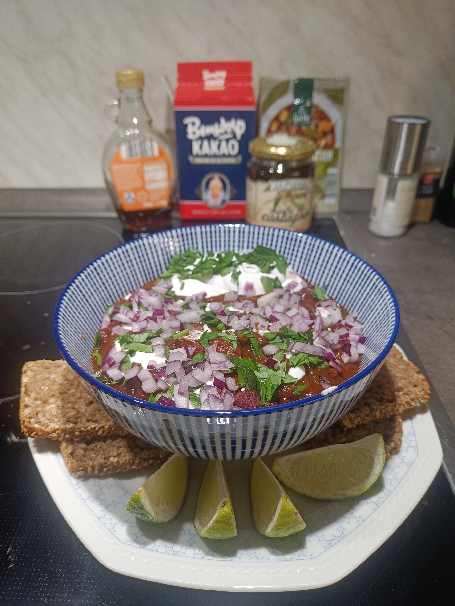

Home
The Vegan Chili

© Photo taken by me (Dario Blaszczyk)
The Vegan Chili: an explosion of flavor
The Vegan Chili is the only chili you'll ever need! Forget the European versions with cheap ground pork and canned corn, which end up tasting like nothing.
This chili, which contains no meat or substitutes, is a pure explosion of flavor in your mouth that you'll rarely have experienced before.
The main ingredients, besides the many spices, are beans of your choice, chopped or peeled tomatoes, onions, lots of garlic, vegetable broth,
cilantro and, depending on how spicy you like it, jalapeños. You can let your creativity run wild with the toppings, or use leftovers.
I recommend vegan cold cream to balance out the spiciness and heat, chopped red onions or spring onions, and parsley. Round it off with a lime to add a little fresh acidity.
The only downside to this dish is that it doesn't cook quickly. Start early and be prepared to stir a lot! But before you bounce from the recipe: the preparation is super quick.